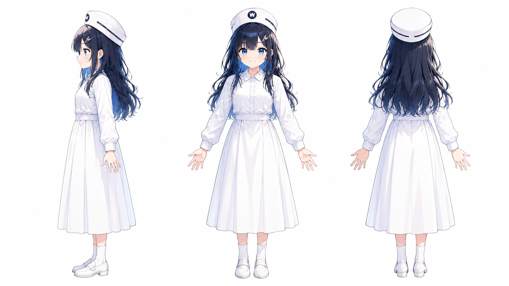
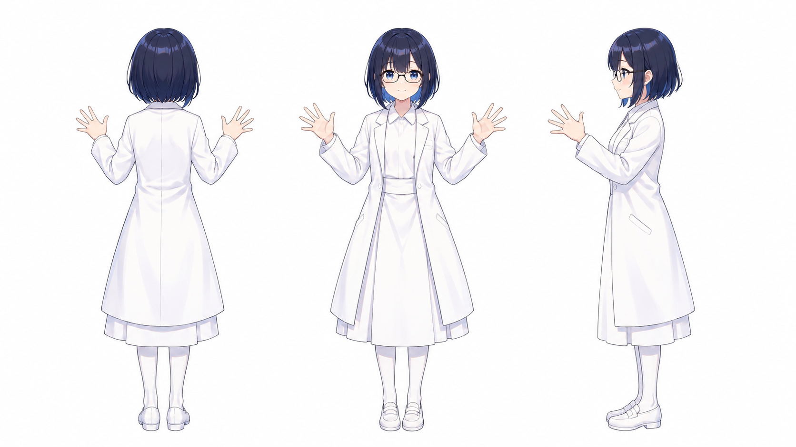

ギャラリー


更新情報
- サイト公開
- 三面図更新、軽微な修正
プロフィール
※この項目では主に公式ビジュアル バージョン1について解説しています
- フルネーム
- 鈴木 鈴子 すずき すずこ
- 呼び名
- 鈴子ちゃん
- 年齢
- 永遠に21歳
- 生年月日
- 2004年7月15日
- 家族
- 作者 鈴木の子供
- 職業
- 架空の病院 White Wing（白い翼）病院に勤める若手看護師
- 資格
- 看護師資格持ち
- 性格と特徴
-
年相応の無邪気な性格
可愛い笑顔が特徴
キャップのWはWhite Wing（白い翼）病院の頭文字 - 服装
-
白を基調とした看護師風、医師風
- 髪型 髪色
-
バージョン1は長め
バージョン2は短め
紺色、一部に青いメッシュやハイライト - 制帽
- 白いナースキャップのような帽子
- イメージカラー
- 白
- デザイン方針
- 適当にやっていたらこうなりました
鈴子ちゃんについて
鈴子ちゃんの正確な誕生日は特定できませんが2025年7月中、おそらく7月15日あたりに誕生しました。それをもとに設定上の生年月日は2004年7月15日にしました。
鈴子ちゃんの本業は看護師ですがマルチタレントという扱いでもあります。
若手看護師という設定になったのは偶然で私が特別に看護師好きだったわけではありません。鈴子ちゃんはAI画像生成サービス Anirole（アニロール）から生まれました。なんとなく可愛いキャラクターができればいいなという軽い気持ちでしたが偶然生成された鈴子ちゃんを見て一目惚れしました。
青を基調にすることは意識していましたが看護師風のキャラクターを意図して生成したわけではありません。
自分で生成したAIキャラクターは、まるで我が子のように可愛く愛おしい存在です。皆様もAIを活用してオリジナリティあふれるキャラクターを作成してみてはいかがでしょうか。きっと愛着が湧くはずです。そして、そのキャラクターを大切に育てていく楽しみを味わっていただきたいです。
たとえ利益にならなくても自分がこの世を去った後、電子の世界にキャラクターが残り続けるかもしれません。現実の子供たちと同じように自分が生きた証として残っていくと思います。
ガイドライン
このガイドラインは、鈴木（以下、作者）が作成したオリジナルキャラクター「鈴子ちゃん」の利用、および二次創作に関するルールを定めたものです。「鈴子ちゃん」というキャラクターと、その世界観を大切に守りながらお楽しみいただくために、ご利用の際は必ずご一読ください。
公式WEBサイト
鈴子ちゃん公式サイト
※当サイトはリンクフリーです。拡散・引用を歓迎します。
1. 基本方針
「鈴子ちゃん」は作者の思想や哲学を反映させながら育成しているキャラクターです。
本ガイドラインを遵守していただける限り、個人の方が趣味の範囲で行う創作活動（イラスト、漫画、小説、動画、AI生成など）を歓迎いたします。
2. 利用可能な範囲（OK）
- 全年齢向けファンアートの制作・公開
手描き、3DCG、生成AIなど、制作手法は問いません。
SNS（Instagram, note等）や創作系SNSへの投稿。 - 設定の改変
パラレルワールド設定など、キャラクターの魅力を探求する形（「もしも鈴子ちゃんが〇〇だったら」等）であれば自由に可能です。 - AI生成における利用
「鈴子ちゃん」の画像を用いたi2i（Image to Image）等の個人的な実験・利用。
個人の端末内でのLoRA等の追加学習モデル作成・利用（※配布は禁止です。詳しくは禁止事項をご確認ください）
3. 禁止事項（NG）
以下の行為は固く禁止させていただきます。
- 画像の再配布
作者が作成・公開した画像を、そのままの状態で二次配布・転載することは禁止します。 - 学習モデル（LoRA等）の公開・共有・配布・販売
鈴子ちゃんを再現しやすくする目的で作成された追加学習モデルやLoRA等の公開・共有・配布・販売は禁止します。
個人の端末内での作成・利用については可としますが、第三者が利用できる形での共有は行わないでください。 - 年齢制限を伴う表現（R-18 / R-18G）
性的表現（R-18）および、暴力的・猟奇的な表現（R-18G）を含む作品の作成、公開は一切禁止します。
看護師というモチーフ、およびキャラクターの清廉なイメージを損なわない範囲での創作をお願いいたします。 - 無断での商用利用
金銭の授受が発生する利用（グッズ販売、有料プランでのデータ配布、収益化を主目的とした活動等）は、行うことを禁止します。 - 自作発言
「鈴子ちゃん」のデザインや基本設定を、自分が考案したと偽る行為。 - 特定の思想・信条への利用
政治活動、宗教活動、特定の思想を主張するための利用。
他者を攻撃・差別・誹謗中傷するための利用。 - なりすまし
公式（作者：鈴木）であると誤認させるような振る舞い。
4. 表記について
- 非公式であることの明記
閲覧者が「公式作品」と誤認しないよう非公式ファン作品であることが分かる範囲での表記にご協力ください。 - クレジット表記（任意）
作品公開時のクレジット表記は任意です。
表記例: Character: 鈴子ちゃん (by 鈴木)
5. 免責事項
本キャラクターを利用したことで発生した利用者間のトラブルや損害について、作者は一切の責任を負いません。本ガイドラインの内容は、予告なく変更される場合があります。常に最新の情報をご確認ください。
各種SNSなど
note 作者について知りたい方向け
https://note.com/stocktrading0_ai/n/n6883256131d2?app_launch=false
X (旧Twitter)
作者 鈴木: https://x.com/stocktrading0
鈴子ちゃん: https://x.com/suzuko_ai_